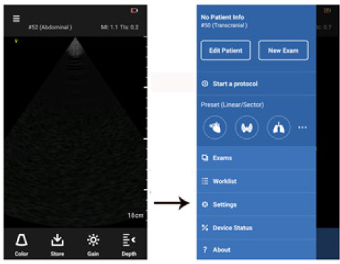

Press Menu -> Settings

Figure 4-1. Settings
• Brightness - adjusts the screen brightness of the device
Swipe the brightness level indicator to the left to decrease the brightness and swipe to the right to increase the brightness.
Auto Freeze (Probe) - set the auto freeze time.
1. Press Auto Freeze (Probe)
2. Choose the desired value
3. Press OK to set the value
Video Duration - set duration of the captured Cine loops.
1. Press Video Duration
2. Choose the desired value
3. Press OK to set the value
Unit of Measurement - set unit of measurement
1. Press Unit of Measurement
2. Choose the desired unit
3. Press OK to set the value
Set current preset as default
1. Press Set Current Preset as Default
2. Press Yes to set the displayed preset as default.
|